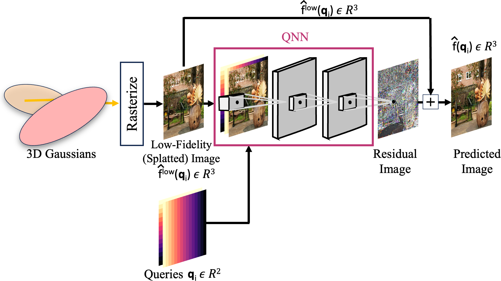
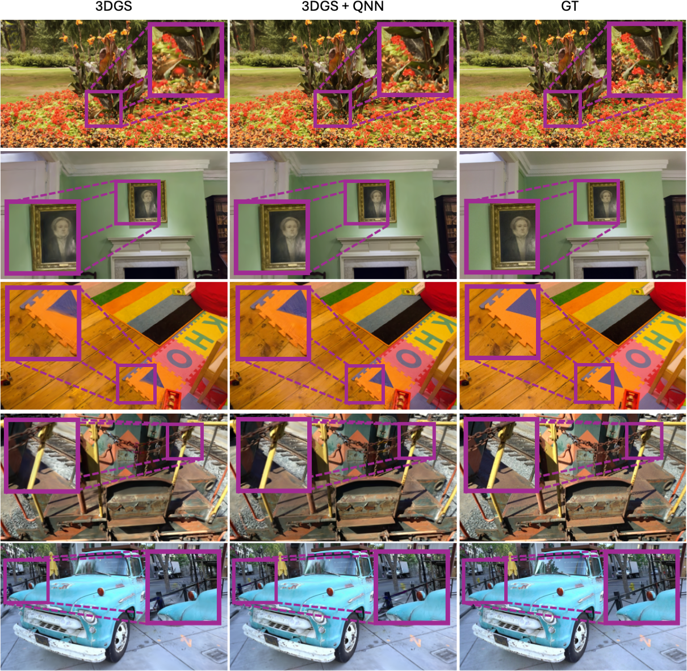
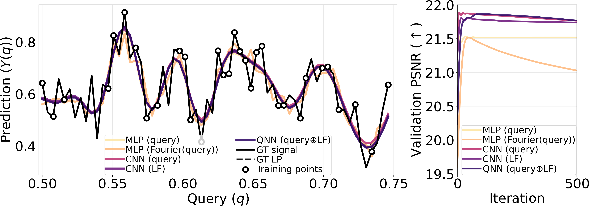
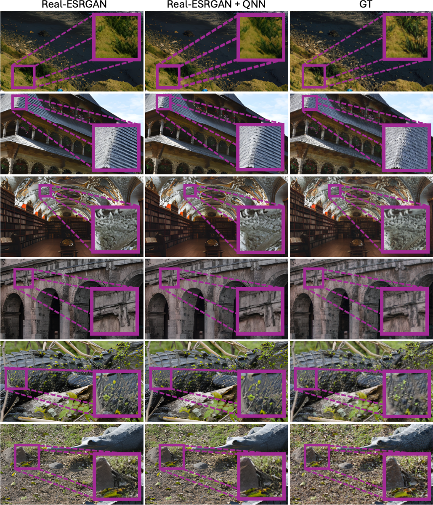

Gaussian Splatting has revolutionized the field of Novel View Synthesis (NVS) with faster training and real-time rendering. However, its reconstruction fidelity still trails behind the powerful radiance models such as Zip-NeRF. Motivated by our theoretical result that both queries (such as coordinates) and neighborhood are important to learn high-fidelity signals, this paper proposes Queried-Convolutions (Qonvolutions), a simple yet powerful modification using the neighborhood properties of convolution. Qonvolutions convolve a low-fidelity signal with queries to output residual and achieve high-fidelity reconstruction. We empirically demonstrate that combining Gaussian splatting with Qonvolution neural networks (QNNs) results in state-of-the-art NVS on real-world scenes, even outperforming Zip-NeRF on image fidelity. QNNs also enhance performance of 1D regression, 2D regression and 2D super-resolution tasks.
Combine GS with QNN

GS+QNN Architecture. Our method introduces Queried-Convolution (Qonvolution) layers that effectively combine coordinate-based queries with neighborhood information. In the context of Gaussian Splatting, Qonvolutions leverage queries and low-fidelity signals to generate high-fidelity residuals, significantly improving reconstruction quality while maintaining efficient training and rendering speeds.
3DGS vs. 3DGS + QNN
3DGS vs. 3DGS+QNN Image Results

NVS Results. We provide examples of NVS task using 3DGS (Kerbl et al., 2023) baseline on multiple datasets. Adding QNN to faithfully reconstructs details in various regions and results in higher quality synthesis visually. We highlight the differences in inset figures.
1D Regression Results

1D Regression Results. QNN outperforms MLP-based architectures including Fourier encodings in regressing high-fidelity signals. This simple experiment compares networks which take the 1D queries and low-fidelity (LF) signal as input to predict the high-fidelity 1D signal.
2D Image Super Resolution (SR) Results

SR Results. Adding QNN to Real-ESRGAN faithfully reconstructs details in various regions and results in higher quality synthesis visually.
Related Works
"We stand on the shoulder of giants. (William of Conches, 1123)"
1. Encodings: Fourier encodings and Hash-grids change the input coordinates to a higher dimensional coordinates for an MLP.
2. Activations: SIREN, sinc, QIREN and FINER change activation functions for MLPs.
3. Frequency Domain Methods: Lee et al. predict Fourier series coefficients, while Cai et al. predict phase-shifted signals for MLP.
4. Frequency-weighted Loss: Fre-GS applies frequency-weighted losses during training.
5. Network Ensembles: Galerkin neural networks use multiple networks to approximate high-fidelity signals.
There are probably many more by the time you are reading this.
BibTeX
@article{kumar2025qonvolution,
title={Towards High-Fidelity Gaussian Splatting with Queried-Convolution Neural Networks},
author={Kumar, Abhinav and Aumentado-Armstrong*, Tristan and Valkov*, Lazar and Sharma, Gopal and Levinshtein, Alex and Grzeszczuk, Radek and Kumar, Suren},
journal={arXiv preprint arXiv:2512.12898},
year={2025}
}